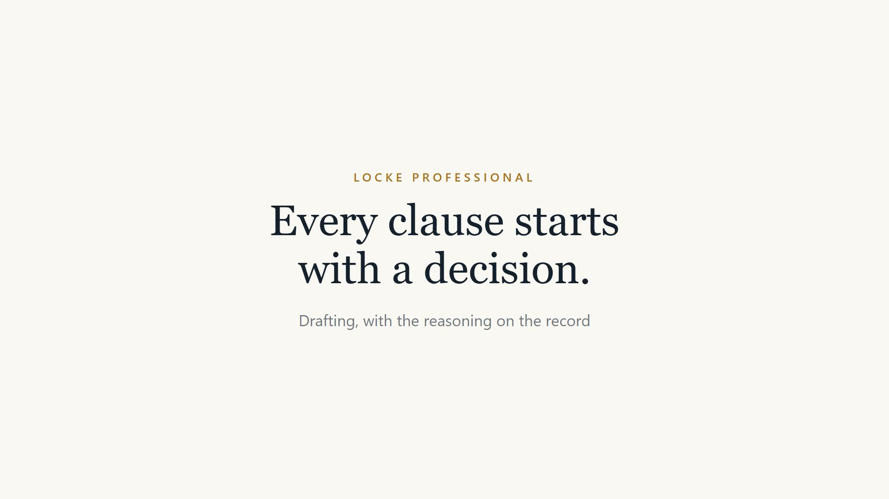

Every clause
starts with a decision.
A working contract platform that makes legal and commercial judgment explicit: identify the issue, weigh the positions, record the choice, then assemble, review and manage the agreement.
For future software-development clients, hiring managers and engineering evaluators.

Interactive guided tour → · Official video linked from Locke Professional
Legal drafting is really a sequence of decisions.
What looks like a document problem is often a judgment problem: which party bears which risk, what happens in a dispute, what the fallback is, and which clauses must survive negotiation.
Locke Professional is built around those decisions. Issue cards expose competing positions and their consequences; an attorney decision ledger records the accepted choices; governed clause libraries translate those choices into document content.
AI is an assistant inside that process—not the source of legal authority.
One integrated product. Six engineering disciplines.
Decision-led drafting
Party posture, issue-spotting triggers, recommended and alternative positions, load-bearing warnings and durable decision records.
Source-grounded review
Findings tied to evidence, reviewer assignment, dispositions, comments, exceptions, redlines and completion checks.
Ask Locke AI
Real-template routing, stage-aware navigation, canonical fact seeding, contract Q&A and transparency when only part of a document was read.
Governed document engine
Controlled domain libraries, release clearance, structured questionnaires, assembly checks and multi-format export.
Contract lifecycle
Organization-scoped repository, content-bound approvals, signatures, executed-artifact integrity and obligation work, with incomplete areas disclosed.
Extensible architecture
Express/PostgreSQL services, React/TypeScript, Word add-in, scoped API keys, HMAC-signed webhooks and specialized domain adapters.
From a transaction to a defensible record.
Each stage carries evidence and decisions into the next, making the product more than a disconnected set of AI prompts.
This is the system's architectural journey, not a claim that every possible stage is live-certified. Renewal and outside-intake capabilities are recorded as incomplete in the source audit.
Intelligence in the workflow, with a clear boundary.
Ask Locke guides users to real registered libraries and templates, understands where they are in the application and can move supported facts into a questionnaire. With an open agreement, it switches to questions grounded in that document.
If an answer uses only an excerpt, the user is told that the unread text was not checked. That explicit coverage disclosure is a concrete engineering control, not a marketing promise about perfect AI.
Recommendation constrained to registered product records
Useful deal facts become recognized questionnaire variables
Substantive prompts use the available agreement excerpt
No unsupported claim that an unread clause is absent
Output validation, limited history and fallback when unavailable
AI cannot replace the governed decision and assembly process
Not a mockup. An auditable product architecture.
Inspecting a product at the file level is more valuable to a future employer or client than repeating feature slogans. The source-mapped register covers 361 specific capabilities, and the separate route inventory tracks 203 declared operations across 25 route modules.
It shows applied AI engineering, front-end UX, backend and database design, legal-domain modeling, release governance, third-party integrations and disciplined failure boundaries.
Open full 361-feature register Inspect route evidenceEvidence includes the unfinished work.
All 24 capability areas were checked against the application's current source-maintained release inventory—not simply inferred from their existence in the UI.
The site advertises nine production libraries and 99 review-ready templates; the source registry lists 13 packages and publishes only production-cleared content. Public pricing is by consultation, not through a verified self-serve billing flow. The deployed release SHA matches the inspected repository commit.
Where Locke competes—and where others are stronger.
All five rivals offer real AI features. The comparison treats that as a fact, while explaining the specific decisions and implementation choices that make Locke Professional a meaningful engineering portfolio.
| Category | Locke Professional | Ironclad | Icertis | Agiloft | LinkSquares | Juro |
|---|---|---|---|---|---|---|
| Decision-led drafting | Explicit posture, issue cards, alternatives and decision ledger | AI playbooks, fallback terms | Governed playbooks and AI redlining | Playbook risk reviews | Playbook-driven redlining | Priority-driven AI review |
| Contract-aware AI | Stage-aware Ask Locke, real templates, source-coverage limits | Ironclad Agent / Review Agent | Vera Copilot / Agents | Astra / Ask AI agents | AI Legal Assistant | AI Assistant |
| Review and negotiation | Source-linked findings, decisions, exceptions and comparisons | Full review workflow and Word redlines | Word negotiation and governance | Review and approvals | AI redlines with tracked changes | Browser-native negotiation |
| Contract repository | Organization-scoped, versioned and searchable | Enterprise repository | Enterprise repository | Contract repository | Analyze repository | Intelligent repository |
| Electronic signing | First-party ledger; outside signer email depends on configuration | Signature capabilities | Contract execution workflows | Signature integrations | Native LinkSquares Sign | Built-in eSignature |
| Obligations and renewals | Extraction and notice computation; some notification features incomplete | Obligation/renewal agents | Vera Obligations | Advanced obligation tracking | Risk and post-sign analytics | Obligation/renewal tracking |
| Commercial maturity | Consultation-led; checkout not fully verified | Established platform | Established enterprise CLM | Established enterprise CLM | Established platform | Established platform |
Competitor information is based on official documentation current to November 2026, not a hands-on test of private vendor accounts. This table does not assert Locke leads absolutely in performance or legal quality. For 45 nuanced comparisons and sources, open COMPARISON.md.
Read the full evidence-based comparisonFive documented platforms, no straw men.
AI agents, deep playbooks, workflow designer, Word review and contract analytics.
Official platform ↗Vera Copilot, enterprise contract intelligence, integrated operations and obligations.
Official Copilot ↗Configurable CLM, Astra and Ask AI agents, obligation and integration capabilities.
Official platform ↗AI assistant, redlining, Analyze/Finalize/Sign and Word add-in review.
Official cloud ↗Browser-native contract collaboration, AI drafting/review, e-sign and repository.
Official product ↗Reviewed November 13, 2026. Methodology, attribution and known gaps are documented in METHODOLOGY.md. Private code is not published.